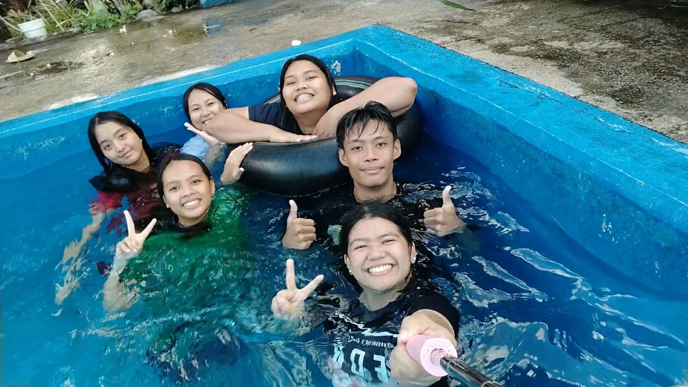

WEEKEND MOMENTS
Weekend Pool
Vibes.

Nothing beats the tropical heat quite like jumping into cool, refreshing water with your favorite people. Weekend getaways are all about letting go of stress, laughing out loud, and enjoying carefree moments together.
From floating around on inner tubes to snapping fun selfies right from the water, pool days capture the true essence of relaxation and friendship. It is all about making a splash, sharing inside jokes, and soaking up every bit of the sunny days.